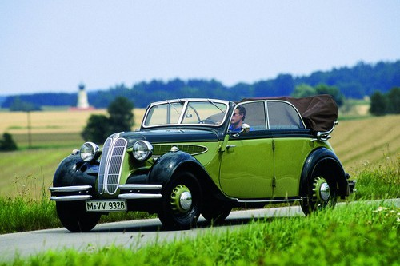
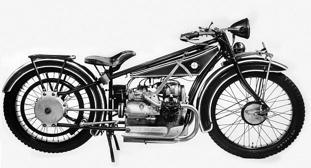

Historia BMW
Bayerische Motoren Werke AG, znane na całym świecie jako BMW, to niemiecki gigant motoryzacyjny, którego korzenie sięgają początków XX wieku. Założone w 1916 roku jako producent silników lotniczych, BMW szybko przekształciło się w jednego z wiodących producentów samochodów i motocykli.
W latach 20. BMW rozpoczęło produkcję motocykli, a pierwszy samochód marki pojawił się w 1928 roku. Od tego czasu BMW stało się synonimem innowacji, luksusu i wyjątkowej jakości wykonania, co widoczne jest w każdym modelu wyjeżdżającym z ich fabryk.
Przez dziesięciolecia, BMW odgrywało kluczową rolę w kształtowaniu globalnego przemysłu samochodowego, wprowadzając szereg innowacyjnych technologii i wyznaczając nowe standardy w zakresie wydajności i designu. Dziś, z bogatą historią i jasną wizją przyszłości, BMW kontynuuje swoją misję dostarczania niezrównanych doświadczeń motoryzacyjnych na całym świecie.